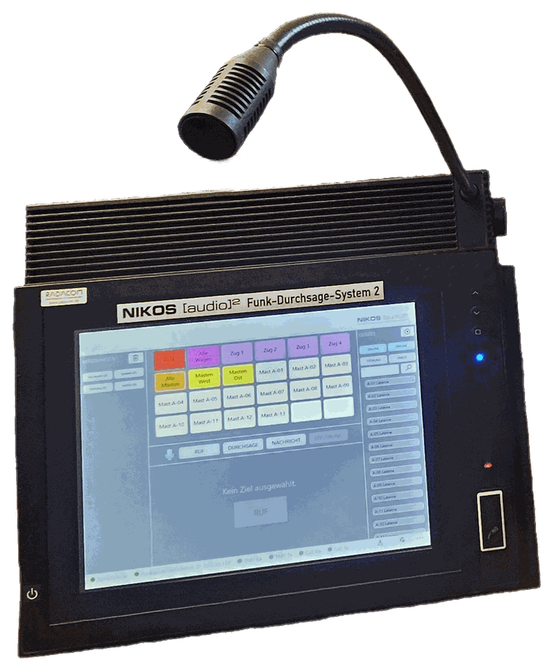
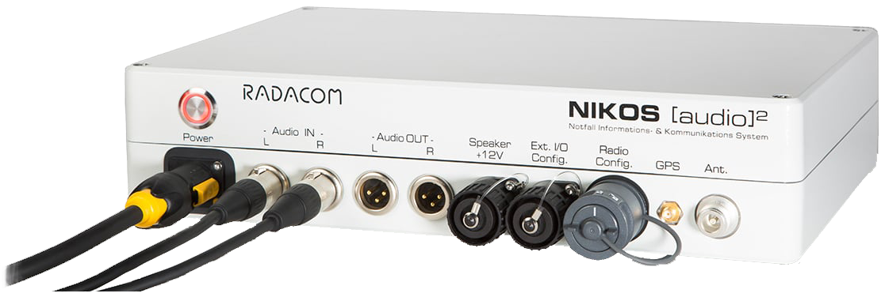
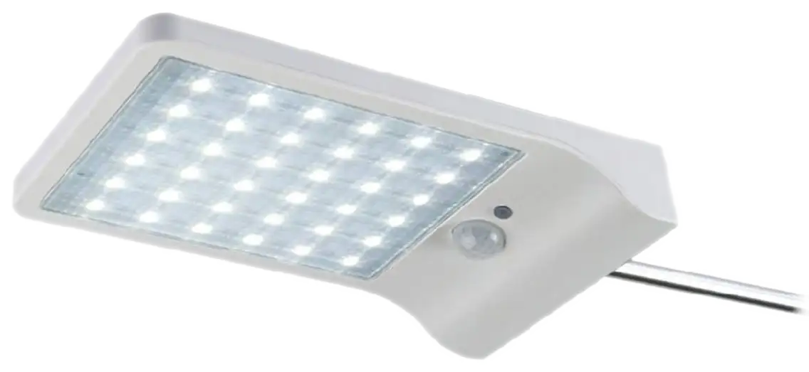

![NIKOS [dispatcher]²](assets/logos/nikos/SVG/NIKOS dispatcher.svg)
Funkleitstelle mit Notfallfunktionen
Radio control center with emergency functions
Der NIKOS [dispatcher]² ist ein vollwertiger Funkleitstellenarbeitsplatz für Krisenstab oder technische Leitung auf Großveranstaltungen, in Krisenlagen oder auf anderen temporären Einsätzen. Mitarbeiterkoordination über Funk, Hintergrundmusik, Service-Informationen, Werbeeinspielungen, Perimeterschutz, Besucherlenkung, Gerätesteuerung, Statusmonitoring und Kopplung mit der Besucherzählung – alles auf einem Bildschirm mit Kartenansicht und Stromausfall-Meldung an den Endgeräten. NIKOS begleitet den Veranstaltungsalltag zuverlässig und unauffällig.
The NIKOS [dispatcher]² is a full-fledged radio control-room workstation for crisis teams or technical management at large events, in crisis situations or on other temporary deployments. Staff coordination by radio, background music, service announcements, advertising spots, perimeter protection, crowd guidance, device control, status monitoring and integration with visitor counting – all on a single screen with map view and power-failure alerts at the end devices. NIKOS accompanies day-to-day event operations reliably and unobtrusively.
- Komfortable Sprechfunkzentrale zur Mitarbeiterkoordination
- Convenient radio dispatch centre for staff coordination
- Live- oder vorbereitete Durchsagen an Einzelziele, Gruppen oder alle Ziele verbreiten
- Distribute live or pre-recorded announcements to individual targets, groups or all targets
- Hintergrundmusik, Service-Informationen und Werbeeinspielungen im Normalbetrieb
- Background music, service announcements and advertising spots in normal operation
- Perimeterschutz und Besucherlenkung über gekoppelte Module
- Perimeter protection and crowd guidance via linked modules
- Kopplung mit der Besucherzählung
- Integration with visitor counting
- Personenführung in großen Menschansammlungen (Crowd Management) in Alltags- und Notfallsituationen
- Guiding people in large crowds (crowd management) in everyday and emergency situations
- Automatische Durchsagewiderholungsroutinen
- Automatic announcement repetition routines
- Text-to-Speech-Durchsagen
- Text-to-speech announcements
- Spontane Funkgruppenbildung (Over the Air Regrouping)
- Spontaneous radio grouping (over-the-air regrouping)
- Textnachrichten an Funkteilnehmer
- Text messages to radio participants
- Systemmonitoring und Positionsanzeige aller NIKOS [audio]² Einheiten
- System monitoring and position display of all NIKOS [audio]² units
- Fernsteuerung und -überwachung externer Geräte
- Remote control and monitoring of external devices

![NIKOS [audio]²](assets/logos/nikos/SVG/NIKOS audio.svg)
Durchsagen ohne Kabelziehen
Announcements without cable runs
Informations- und Notfalldurchsagen, Hintergrundmusik, Werbeansagen, Telemetrie und Systemmonitoring in einem robusten Gerät.
Information and emergency announcements, background music, advertising messages, telemetry and system monitoring in one robust device.
- Durchsagen über bestehende Beschallungsanlagen auf Bühnen, in Festzelten und auf Festumzugswagen
- Announcements via existing PA systems on stages, in marquees and on parade floats
- Durchsagen und Hintergrundmusik über NIKOS [horn]² an Orten ohne Beschallungsanlage (z. B. Verkehrswege)
- Announcements and background music via NIKOS [horn]² at places without a PA system (e.g. traffic routes)
- Unterbrechung von Schausteller-Anlagen über optionalen Pilotton
- Interruption of showmen's audio systems via optional pilot tone
- Abschaltung von externen Musikanlagen (Störschallquellen) während der Durchsagen
- Shutdown of external music systems (interfering noise sources) during announcements
- Fernabschaltung von Musikanlagen zur Einhaltung der Nachtruhe
- Remote shutdown of music systems to comply with quiet hours
- Fernschaltung von Lichtmasten, Pumpen etc.
- Remote switching of light masts, pumps, etc.
- Stromausfallalarmierung
- Power-failure alerting
- vollständige Überwachung des Betriebszustandes
- Complete monitoring of the operating status
- Einschleifen per XLR zwischen Quelle und Verstärker (Ducking) – ohne Einfluss auf Audioqualität und Pegel
- Looped in via XLR between source and amplifier (ducking) – no effect on audio quality or level
- Gezielte Ansprache einzelner, mehrerer oder aller Einheiten über digitale Rufgruppen
- Targeted addressing of single, multiple or all units via digital call groups

![NIKOS [moon]²](assets/logos/nikos/SVG/NIKOS moon.svg)
Autarke Notbeleuchtung
Autonomous Emergency Lighting
Funktioniert ohne Stromnetz. Für dunkle Wege, Risikobereiche und Fluchtwege. Bei Dunkelheit schaltet das Notlicht automatisch ein; ein optionaler Bewegungsmelder erhöht die Helligkeit bei Annäherung.
Works without a power grid. For dark pathways, risk areas and escape routes. The emergency light switches on automatically in darkness; an optional motion sensor increases brightness on approach.
- Ausleuchtung dunkler Ecken auf Festivals
- Illuminating dark corners at festivals
- Fluchtwegkennzeichnung bei Parkfesten
- Escape-route marking at park festivals
- Backup-Beleuchtung auf Stadtfesten
- Backup lighting at city festivals
- Sicherheitsbeleuchtung auf Baustellen
- Safety lighting on construction sites

![NIKOS [horn]²](assets/logos/nikos/SVG/NIKOS horn.svg)
![NIKOS [flash]²](assets/logos/nikos/SVG/NIKOS flash.svg)
![NIKOS [relay]2](assets/logos/nikos/SVG/NIKOS relay.svg)
![NIKOS [clamp]2](assets/logos/nikos/SVG/NIKOS clamp.svg)
![NIKOS [XLR]²](assets/logos/nikos/SVG/NIKOS XLR.svg)
![NIKOS [LED]2](assets/logos/nikos/SVG/NIKOS LED.svg)
![NIKOS [alarm]²](assets/logos/nikos/SVG/NIKOS alarm.svg)